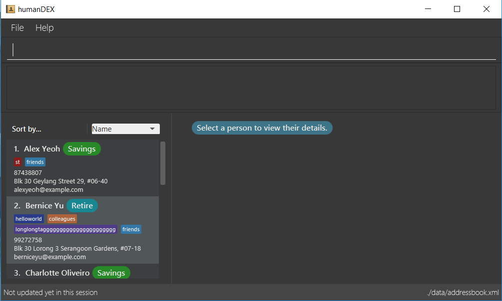

By: Team CS2103AUG2017-F11-B1 Since: Sep 2017 Licence: MIT
- 1. Quick Start
- 2. Features
- 2.1. Viewing help :
help - 2.2. Adding a person:
add - 2.3. [Since v1.3] Listing all persons :
list - 2.4. [Since v1.3] [Since v1.4] Sorts and lists all persons using fields :
sort - 2.5. Editing a person :
edit - 2.6. [Since v1.2] Locating persons by other fields:
find - 2.7. Deleting a person :
delete - 2.8. Selecting a person :
select - 2.9. Listing entered commands :
history - 2.10. Undoing previous command :
undo - 2.11. Redoing the previously undone command :
redo - 2.12. Clearing all entries :
clear - 2.13. [Since v1.4][Since v1.5] Setting Passwords:
password - 2.14. Exiting the program :
exit - 2.15. Saving the data
- 2.1. Viewing help :
- 3. Features v2.0
- 4. FAQ
- 5. Command Summary
1. Quick Start
-
Ensure you have Java version
1.8.0_60or later installed in your Computer.Having any Java 8 version is not enough.
This app will not work with earlier versions of Java 8. -
Download the latest
humanDEX.jarhere. -
Copy the file to the folder you want to use as the home folder for your Address Book.
-
Double-click the file to start the app. The GUI should appear in a few seconds.
 -
Type the command in the command box and press Enter to execute it.
e.g. typinghelpand pressing Enter will open the help window. -
Some example commands you can try:
-
list*all: lists all contacts -
addn/John Doe p/98765432 e/johnd@example.com a/John street, block 123, #01-01 g/Savings: adds a contact namedJohn Doeto the Address Book. -
delete3: deletes the 3rd contact shown in the current list -
exit: exits the app
-
-
Refer to the Features section below for details of each command.
2. Features
Command Format
-
Words in
UPPER_CASEare the parameters to be supplied by the user e.g. inadd n/NAME,NAMEis a parameter which can be used asadd n/John Doe. -
Items in square brackets are optional e.g
n/NAME [t/TAG]can be used asn/John Doe t/friendor asn/John Doe. -
Items with
… after them can be used multiple times including zero times e.g.[t/TAG]…can be used ast/friend,t/friend t/familyetc. -
Parameters can be in any order e.g. if the command specifies
n/NAME p/PHONE_NUMBER,p/PHONE_NUMBER n/NAMEis also acceptable.
2.1. Viewing help : help
Format: help
2.2. Adding a person: add
Adds a person to the address book
Format: add n/NAME g/GROUP [p/PHONE_NUMBER] [e/EMAIL] [a/ADDRESS] [t/TAG]… [c/CUSTOMFIEILD_KEY:CUSTOMFIELD_VALUE]…
| A person can have any number of tags or custom fields (including 0) |
| A person can be saved with just name and group |
Examples:
-
add n/John Doe p/98765432 e/johnd@example.com a/John street, block 123, #01-01 g/Health c/School:NUS c/Company:Google -
add n/Betsy Crowe t/friend e/betsycrowe@example.com a/Newgate Prison p/1234567 g/Life t/criminal -
add n/Henry Harry g/Savings -
add n/Tim Tom p/12356923 a/Timmy street g/Holiday
2.3. [Since v1.3] Listing all persons : list
list all, shows all person in humanDEX
list tags, shows all tags in humanDEX
list groups, shows all groups in humanDEX
Format: list [SEARCH_TERM]
Examples:
-
list all -
list tags -
list groups
2.4. [Since v1.3] [Since v1.4] Sorts and lists all persons using fields : sort
Sorts the most recent persons listing by the given parameter in lexicographic order.
Format: sort [prefix]…
| prefix includes [n/] [p/] [e/] [a/] [g/] |

Examples:
-
sort p/Sorts the most recent persons listing by phone number. -
find a/jurong+sortFinds all people with address containing 'jurong' and sorts by name. -
sort,sort n/Sorts the most recent persons listing by name.
2.5. Editing a person : edit
Edits an existing person in the address book.
Format: edit INDEX [n/NAME] [p/PHONE] [e/EMAIL] [a/ADDRESS] [-t/TAG]… [+t/TAG]… [clearTag/] [c/CUSTOMFIEILD_KEY:CUSTOMFIELD_VALUE]…
Examples:
-
edit 1 p/91234567 e/johndoe@example.com
Edits the phone number and email address of the 1st person to be91234567andjohndoe@example.comrespectively. -
edit 2 n/Betsy Crower clearTag/
Edits the name of the 2nd person to beBetsy Crowerand clears all existing tags. -
edit 3 c/School:NUS
Clears all existing custom fields and adds the custom fieldSchool:NUS.
2.6. [Since v1.2] Locating persons by other fields: find
Finds persons whose field matches any of the given fields.
Format: find prefix/INPUT [n/NAME]… [p/PHONE]… [e/EMAIL]… [a/ADDRESS]… [g/GROUP]… [t/TAG]… [c/CUSTOMFIELD]…
Examples:
-
find n/John
ReturnsJohnathan KimandJohn Doe -
find t/colleagues t/friends
Returns any person who has acolleaguetag or afriendstag. -
find t/shopkeeper g/RetailReturns any persons who has theshopkeepertag or is in theRetailgroup.
2.7. Deleting a person : delete
Deletes the specified person from the address book.
Format: delete INDEX
Examples:
-
list all
delete 2
Deletes the 2nd person in the address book. -
find n/Betsy
delete 1
Deletes the 1st person in the results of thefindcommand.
2.8. Selecting a person : select
Selects the person identified by the index number used in the last person listing.
Format: select INDEX
Examples:
-
list all
select 2
Selects the 2nd person in the address book. -
find n/Betsy
select 1
Selects the 1st person in the results of thefindcommand.
2.9. Listing entered commands : history
Lists all the commands that you have entered in reverse chronological order.
Format: history
|
Pressing the ↑ and ↓ arrows will display the previous and next input respectively in the command box. |
2.10. Undoing previous command : undo
Restores the address book to the state before the previous undoable command was executed.
Format: undo
|
Undoable commands: those commands that modify the address book’s content ( |
Examples:
-
delete 1
list all
undo(reverses thedelete 1command) -
select 1
list all
undo
Theundocommand fails as there are no undoable commands executed previously. -
delete 1
clear
undo(reverses theclearcommand)
undo(reverses thedelete 1command)
2.11. Redoing the previously undone command : redo
Reverses the most recent undo command.
Format: redo
Examples:
-
delete 1
undo(reverses thedelete 1command)
redo(reapplies thedelete 1command) -
delete 1
redo
Theredocommand fails as there are noundocommands executed previously. -
delete 1
clear
undo(reverses theclearcommand)
undo(reverses thedelete 1command)
redo(reapplies thedelete 1command)
redo(reapplies theclearcommand)
2.12. Clearing all entries : clear
Clears all entries from the address book.
Format: clear
2.13. [Since v1.4][Since v1.5] Setting Passwords: password
Sets, removes or changes password required to use the application. Once a password is set, upon restarting humanDEX, the user will be required to enter the password in order to access humanDex. If the password is forgotten refer to the Developer Guide to rectify the problem.
Format:
-
Add:
password pwd/PASSWORD -
Remove:
password pwd/PASSWORD clearPwd/ -
Change:
password pwd/PASSWORD new/NEW_PASSWORD
2.14. Exiting the program : exit
Exits the program.
Format: exit
2.15. Saving the data
Address book data are saved in the hard disk automatically after any command that changes the data.
There is no need to save manually.
3. Features v2.0
3.1. [Coming in v2.0] Creating a new humanDEX : new_humanDEX
Creates a new humanDEX.
Format: new_humanDEX NAME
-
If you do not specify the name, the default name will be set to
humanDEX_# -
You can perform all commands in any humanDEX.
-
Modifying a contact in one humanDEX will be reflected in all other humanDEXes. *
3.2. [Coming in v2.0] Switching to another humanDEX : switch
Switches to another humanDEX.
Format: switch NAME
-
A new humanDEX interface will popup. *
3.3. [Coming in v2.0] Listing the edit history of a contact : edit_history
Lists all edit history of the person, identified by the index number used in the last person listing, in reverse chronological order.
Format: edit_history INDEX
Examples:
-
edit 1 p/12341234
edit_history 1(prints:phone number changed from ** to 12341234
4. FAQ
Q: How do I transfer my data to another Computer?
A: Install the app in the other computer and overwrite the empty data file it creates with the file that contains the data of your previous Address Book folder.
5. Command Summary
-
Add
add n/NAME g/GROUP [p/PHONE_NUMBER] [e/EMAIL a/ADDRESS] [t/TAG] [c/CUSTOMFIEILD_KEY:CUSTOMFIELD_VALUE]
e.g.add n/James Ho p/22224444 e/jamesho@example.com a/123, Clementi Rd, 1234665 t/friend t/colleague c/School:NUS g/Savings -
Clear :
clear -
Delete :
delete INDEX
e.g.delete 3 -
Edit :
edit INDEX [n/NAME] [p/PHONE_NUMBER] [e/EMAIL] [a/ADDRESS] [-t/TAG]… [+t/TAG]… [clearTag/] [g/GROUP]
e.g.edit 2 n/James Lee e/jameslee@example.com -
Find by field :
find [n/NAME]… [p/PHONE]… [e/EMAIL]… [a/ADDRESS]… [t/TAG]… [g/GROUP]… [c/CUSTOMFIELD]
e.g.find p/99991234e.g.find t/colleagues t/clients g/Savings -
List :
list [SEARCH_TERM]e.g.list tagse.g.list groupse.g.list all -
Sort (by name) :
sort -
Sort :
sort [n/] [p/] [e/] [a/] [t/]
e.g.sort n/ a/ -
Help :
help -
Select :
select INDEX
e.g.select 2 -
History :
history -
Undo :
undo -
Redo :
redo -
Password Management
-
Add:
password pwd/PASSWORD -
Remove:
password pwd/PASSWORD clearPwd/ -
Change:
password pwd/PASSWORD new/NEW_PASSWORD
-